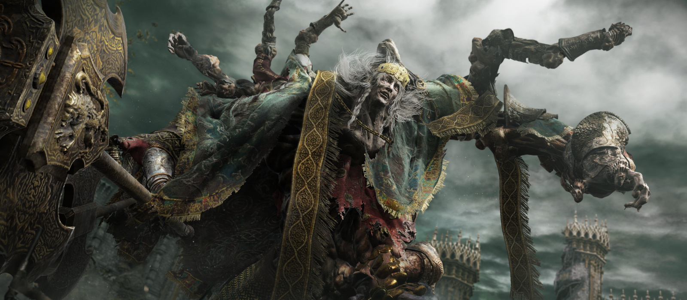
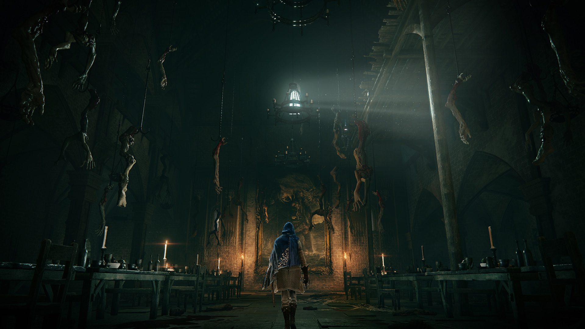
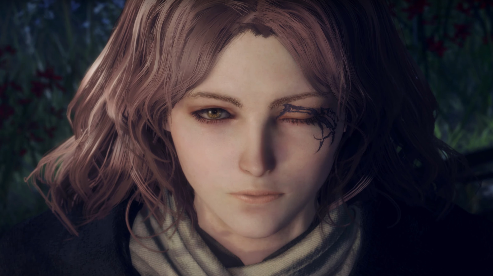
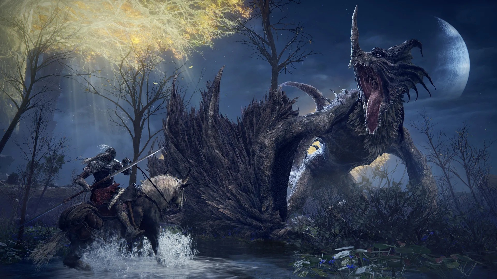
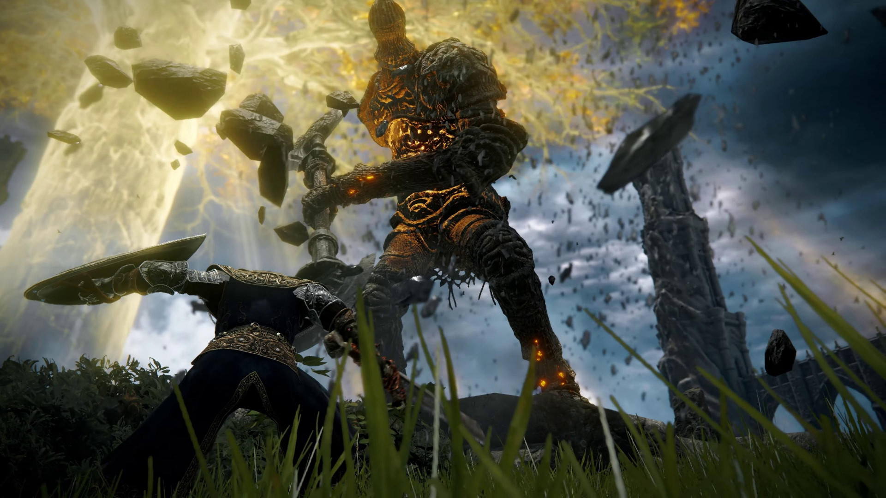
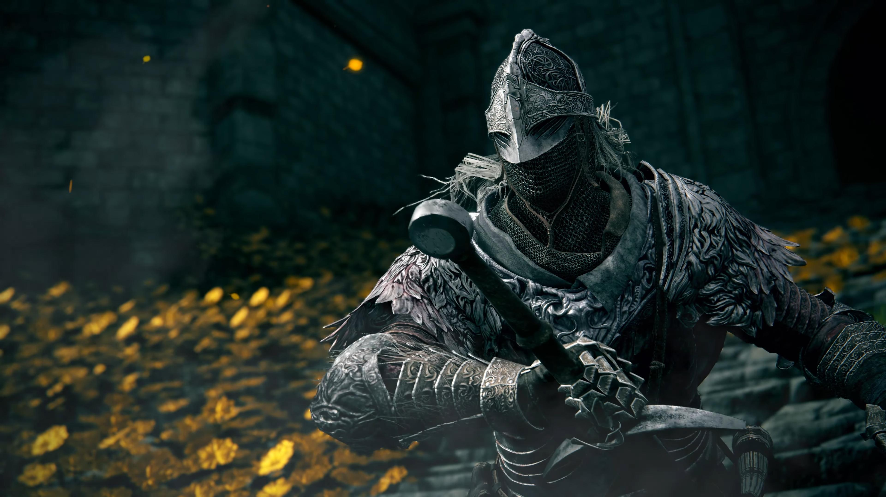

Впечатления от Elden Ring. Миядзаки преображает жанр и готовится выпустить лучшую игру 2022
25 февраля выйдет Elden Ring, одна из самых ожидаемых игр года. На днях Bandai Namco пригласила нас на геймплейную сессию и позволила провести шесть часов в релизной версии проекта. Я порубил в капусту сотни тварей, умер бесчисленное количество раз и теперь спешу поделиться впечатлениями!
Что такое Elden Ring?
FromSoftware давно ассоциируется с souls-like. Многие успели позабыть, что до того, как Миядзаки (Hidetaka Miyazaki) придумал новый жанр, студия выпустила пятьдесят других игр — среди них были файтинги, хорроры, карточные проекты и экшены про мехов. Однако даже славной серии Armored Core далеко до успехов Demon's Souls, Dark Souls, Bloodborne или Sekiro: Shadows Die Twice.
Сюжет Elden Ring
Когда-то Междуземье напоминало сказку. Все существа жили в мире, прекрасные пейзажи наполняли души счастьем, а королеву Марику почитали словно божество. Всё благодаря кольцу Элден и Древу Эрд, которые благословляли дивные края. Увы, всему хорошему рано или поздно приходит конец — так случилось и с Междуземьем. Однажды кольцо Элден было разрушено, а его обломками завладели полубоги, дети королевы Марики. Никто не знает, как это случилось: быть может, правительница умерла, а отпрыски пытались поделить могущественный предмет? Эту загадку игроку лишь предстоит разгадать. Главное, что могущество обломков наполнило полубогов силой и извратило их. С тех пор всё покатилось в тартарары.
Геймплей в Elden Ring
Поначалу геймплей Elden Ring может удивить. Герой выходит из загадочной крипты и оказывается на просторной локации. Куда идти? Что делать? Эти вопросы могут озадачить, однако стоит начать путь, как всё встанет на свои места.
Технически в Elden Ring и правда есть открытый мир, и герой может смело направиться в какую угодно сторону. Однако на деле устройство опенворлда напоминает череду широких коридоров. Можно бродить по большим территориям, налетать на аванпосты, заходить в пещеры и замки — однако, чтобы продвинуться по сюжету, предстоит встать на тропу и сквозь узкий проход пробежать в следующий широкий коридор. Проходом могут служить ворота замка, длинный мост и так далее.
Точки интереса в Elden Ring
При желании Потускневший может встать на сюжетную тропу и уверенно бежать вперёд. Тогда он упустит множество возможностей стать сильнее, хотя при наличии скилла — это не приговор. Куда важнее то, что по миру разбросано множество крутых точек интереса, пропускать которые не стоит.
Герой может заметить небольшую дверь у подножия скалы и обнаружить за ней большое подземелье: там будут хитрые твари, ловко нападающие со спины, обилие смертоносных ловушек и, конечно же, злющий босс. Или забежать в пещеру и столкнуться лицом к лицу с прямоходящим зверем, который завалит избранного раза три, не меньше. Либо спрыгнуть с водопада и наблюдать, как огромный медведь колотит стаю волков. В конце концов, можно просто бродить по локации и нарваться на здоровенного дракона.
Боссы и враги в Elden Ring
Боссы по традиции потрясны. Они круто выглядят, охотно меняют фазы и впечатляют мувсетом. Зачастую при первой встрече трудно даже представить, как их одолеть — однако попытка за попыткой, и вот ты начинаешь заучивать тайминги и комбинации. В какой-то момент босс становится совершенно понятным, и всё-таки погибает — как тут не испытать восторг? При этом плотность запоминающихся врагов в Elden Ring немыслимая. На карте регулярно встречаются враги, которые в любой другой игре стали бы полноценными боссами, а у Миядзаки они числятся в рядах обычных мобов.
